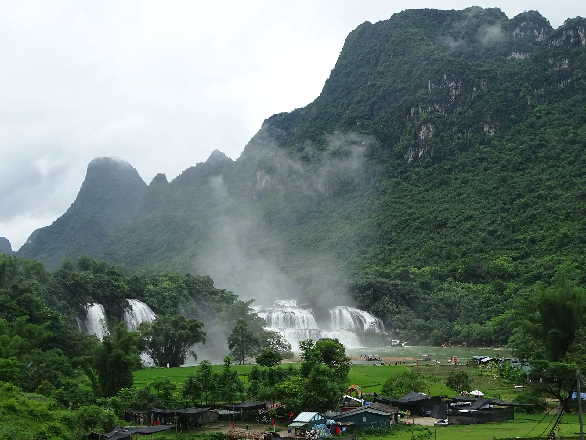

Seven-flavour roast duck
Duck roasted with mắc mật leaves, fragrant with golden crispy skin – Cao Bang's pride.
Illustrative photo: Roast duck Have a real photo of this dish? Send it to Viet Travel
On the Quay Son river at the Vietnam–China border, Ban Gioc tumbles over several limestone tiers, creating a white curtain of water amid green mountains. Combine it with Nguom Ngao cave and Ba Be lake for a complete northeastern adventure.
Loading weather...
Tap a month to see if it's a good time to go
The falls are at their fullest and whitest, and in late September golden rice fields frame the base.
After heavy rain the water turns muddy and rafts near the falls may stop – check the weather first.
Lunar-calendar festivals move each year – check the official dates before you go.
Duck roasted with mắc mật leaves, fragrant with golden crispy skin – Cao Bang's pride.
Illustrative photo: Roast duck Have a real photo of this dish? Send it to Viet TravelThin rolls served with hot bone broth instead of fish sauce.
Illustrative photo: Steamed rice rolls Have a real photo of this dish? Send it to Viet TravelPhở tossed in a sweet-sour sauce with roast pork, peanuts and herbs.
Illustrative photo: A bowl of phở Have a real photo of this dish? Send it to Viet TravelRoast duck with mac mat leaves, fried rice cakes
Chợ Xanh, TP Cao Bằng Updated 09/2026 ReportSour pho, rice rolls in broth
Phố Kim Đồng, TP Cao Bằng Updated 09/2026 ReportTrung Khanh chestnuts, grilled stream fish
Thị trấn Trùng Khánh Updated 09/2026 ReportRice rolls in bone broth with egg
TP Cao Bằng Updated 09/2026 ReportFried rice cakes and khao cakes
Chợ Xanh, TP Cao Bằng Updated 09/2026 ReportRoast pork with mac mat leaves, olive sticky rice
Thị trấn Trùng Khánh Updated 09/2026 ReportCrispy stream fish, wild greens
Khu thác Bản Giốc Updated 09/2026 ReportRoast-duck pho
Phố Hoàng Như, TP Cao Bằng Updated 09/2026 ReportIndicative prices per person. Tap an address to open Google Maps for opening hours and the latest reviews.
Float right up to the foot of the falls and feel the cool spray.
A cave full of shimmering stalactites.
Morning light often creates rainbows over the falls.
Suggested for this destination and month (pick a start date in the Itinerary section to change the month). Tick items to remember what you have packed.
Spotted a changed price, opening time or closed shop? Report
300k–800k / night
See the falls early before the crowds.
300k–600k / night
Handy for the falls and Nguom Ngao cave.
400k–1M / night
First/last night, near the bus station.
Sleeper bus Hanoi – Cao Bang city ~7 h, then ~2 h to Trung Khanh (Ban Gioc falls). Many 2-day tours from Hanoi.
| From Hanoi |
|
|---|---|
| From Da Nang |
|
| From Ho Chi Minh City |
|
Estimated travel time; one-way budget fare per person – for reference. The option in bold is our suggestion.
Indicative room rates for 2 people per night; higher at Tet, holidays and weekends. Việt Travel earns no commission from booking sites.
Việt Travel · Cao Bang · Best time: August – October (high water, ripe rice)
Pac Bo historic site, Lenin stream and Coc Bo cave.
Enjoy seven-flavour roast duck and stay in the city.
A short night stroll, then back to rest
Cross Ma Phuc pass to Ban Gioc and take a bamboo raft to the falls.
Truc Lam Buddhist pagoda and Nguom Ngao cave.
Stay at a homestay in Trung Khanh.
A short night stroll, then back to rest
See Thang Hen lake and the "14-tier" Khau Coc Cha pass.
Phuc Sen blacksmith village and Phja Thap incense village.
Buy Trung Khanh chestnuts and try sour phở.
A short night stroll, then back to rest
End of tour: check out, shop for local specialties and head home.
Breakfast at your stay (often included in the room rate)
The Eye of God (pierced mountain) in Quang Uyen.
Cross Ma Phuc pass to Bao Lac and the winding Gam river.
Stay in Bao Lac and try bánh áp chao pastries.
A short night stroll, then back to rest
End of tour: check out, shop for local specialties and head home.
Breakfast at a busy local eatery near your stay
Transfer to Bac Kan and boat across Ba Be lake.
Puong cave, Fairy pond and Widow island.
Dinner near your stay – pick a place busy with locals
Homestay in Pac Ngoi village with grilled lake fish.
End of tour: check out, shop for local specialties and head home.
Breakdown: budget
Breakdown: comfort
Breakdown: budget
Breakdown: comfort
Breakdown: budget
Breakdown: comfort
Excludes flights/transport to Ban Gioc Waterfall. Prices are indicative and vary by season.
Entrance fees & opening hours for sights in Ban Gioc Waterfall
Visiting more than one place? Combine Ban Gioc Waterfall with other destinations.
Share your experience
Reader photos
No photos yet – be the first to share a moment in Ban Gioc Waterfall!
Share your photo